Tracking and Disturbance Rejection
System Modeling and Control · Chapter 9
Contents
Servomechanism Modeling
DC Servo Tracking and Disturbance Rejection
PI and PID Control
Tracking Theory and the Internal Model Principle
Aircraft Pitch Control Design
Servomechanisms are used for positioning applications (robot arms, machine tools, etc.).
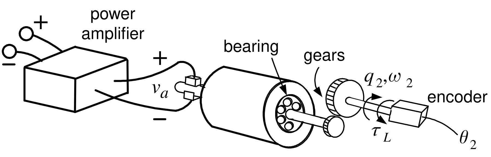
Schematic diagram for a servomechanism.
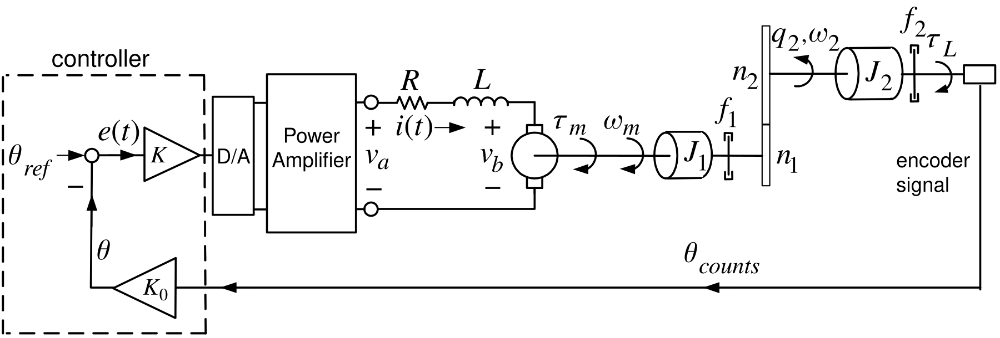
Choose the amplifier gain so the \(\theta(t)\rightarrow\theta_{ref}.\)
Equivalently, we want the error \(e(t)=\theta_{ref}-\theta\rightarrow0.\)
\(K_{T}\) is the motor torque constant (\(\tau_{m}=K_{T}i\)).
\(K_{b}=K_{T}\) is the back-emf constant (\(v_{b}=K_{b}\omega_{m}\)).
\(K\) is the amplifier gain.
\(K_{0}\) is the conversion factor from encoder counts to radians
\(J_{1}\) is the moment of inertia of the motor shaft.
\(J_{2}\) is the moment of inertia of the output shaft.
\(f_{1}\) is the viscous-friction coefficient of the motor shaft.
\(f_{2}\) is the viscous-friction coefficient of the output shaft.
\(n_{1}\) is the number of gear teeth on the motor shaft.
\(n_{2}\) is the number of gear teeth on output shaft.
\(n=n_{2}/n_{1}\) is the gear ratio.
\(J=J_{1}+n^{2}J_{2}\) is total inertia reflected to motor shaft.
\(f=f_{1}+n^{2}f_{2}\) is the total viscous friction coefficient reflected to the motor shaft.
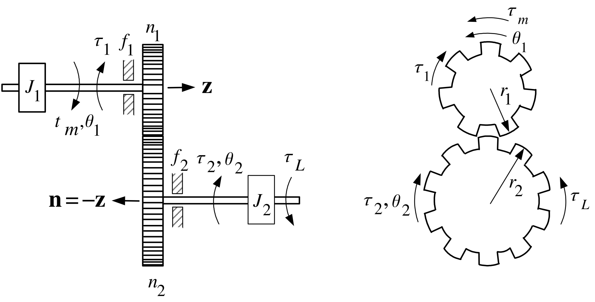
\[ \begin{aligned} \tau_{m}-\tau_{1}-f_{1}\omega_{1} & =J_{1}\frac{d\omega_{1}}{dt}\\ \tau_{2}-\tau_{L}-f_{2}\omega_{2} & =J_{2}\frac{d\omega_{2}}{dt} \end{aligned} \]
with
\[ \begin{aligned} \dfrac{\tau_{2}}{\tau_{1}} & =\dfrac{r_{2}}{r_{1}}=\dfrac{n_{2}}{n_{1}}\\ \quad{}r_{1}\theta_{1} & =r_{2}\theta_{2}\text{ }\Longrightarrow\text{ }r_{1}\omega_{1}=r_{2}\omega_{2}\\ \omega_{m} & =\omega_{1}=\frac{n_{2}}{n_{1}}\omega_{2}. \end{aligned} \]
Using \(\tau_{1}=\dfrac{n_{1}}{n_{2}}\tau_{2}\) and \(\tau_{2}-\tau_{L} -f_{2}\omega_{2}=J_{2}\dfrac{d\omega_{2}}{dt}\):
\[ \begin{aligned} \tau_{1}=\frac{n_{1}}{n_{2}}\tau_{2}=\frac{n_{1}}{n_{2}}\left( \tau_{L} +f_{2}\omega_{2}+J_{2}\frac{d\omega_{2}}{dt}\right) & =\frac{n_{1}}{n_{2} }\!\left( \tau_{L}+f_{2}\left( \frac{n_{1}}{n_{2}}\omega_{1}\right) +J_{2}\frac{d\left( \dfrac{n_{1}}{n_{2}}\omega_{1}\right) }{dt}\right) \\ & =\frac{n_{1}}{n_{2}}\tau_{L}+\left( \frac{n_{1}}{n_{2}}\right) ^{\!2}\!\!f_{2}\omega_{1}+\left( \frac{n_{1}}{n_{2}}\right) ^{\!2} \!\!J_{2}\frac{d\omega_{1}}{dt}. \end{aligned} \]
Using \(\tau_{m}-\tau_{1}-f_{1}\omega_{1}=J_{1}\dfrac{d\omega_{1}}{dt}\):
\[ \tau_{m}=\underset{J}{\underbrace{\left( \left( \frac{n_{1}}{n_{2}}\right) ^{\!2}\!\!J_{2}+J_{1}\right) }}\frac{d\omega_{1}}{dt} +\underset{f}{\underbrace{\left( \left( \frac{n_{1}}{n_{2}}\right) ^{\!2}\!\!f_{2}+f_{1}\right) }}\omega_{1}+\frac{n_{1}}{n_{2}}\tau_{L}. \]
With \(\omega_{m}=\omega_{1}\):
\[ \tau_{m}=J\frac{d\omega_{m}}{dt}+f\omega_{m}+\frac{n_{1}}{n_{2}}\tau_{L}. \]
\[ \begin{aligned} L\frac{di(t)}{dt} & =-Ri(t)-K_{b}\omega_{m}(t)+v_{a}(t)\\ J\frac{d\omega_{m}(t)}{dt} & =\underset{\tau_{m}}{\underbrace{K_{T}i(t)} }-f\omega_{m}(t)-\frac{n_{1}}{n_{2}}\tau_{L}(t)\\ \frac{d\theta_{m}(t)}{dt} & =\omega_{m}(t)\\ \theta(t) & \triangleq\theta_{2}(t)=\frac{n_{1}}{n_{2}}\theta_{m}(t)\\ v_{a}(t) & =K\!\left( \theta_{ref}(t)-\theta(t)\right) . \end{aligned} \]
Let \(r\triangleq\theta_{ref},c\triangleq\theta\) and compute Laplace Transforms:
\[ \begin{aligned} (sL+R)I(s) & =V_{a}(s)-K_{b}\omega_{m}(s)\\ (Js+f)\omega_{m}(s) & =K_{T}I(s)-\frac{n_{1}}{n_{2}}\tau_{L}(s)\\ s\theta_{m}(s) & =\omega_{m}(s)\\ C(s) & \triangleq\theta_{2}(s)=\frac{n_{1}}{n_{2}}\theta_{m}(s)\\ V_{a}(s) & =K\!\left( R(s)-C(s)\right) . \end{aligned} \]
\[ \begin{aligned} (sL+R)I(s) & =V_{a}(s)-K_{b}\omega_{m}(s)\\ (Js+f)\omega_{m}(s) & =K_{T}I(s)-\frac{n_{1}}{n_{2}}\tau_{L}(s)\\ s\theta_{m}(s) & =\omega_{m}(s)\\ C(s) & \triangleq\theta_{2}(s)=\frac{n_{1}}{n_{2}}\theta_{m}(s)\\ V_{a}(s) & =K\!\left( R(s)-C(s)\right) . \end{aligned} \]
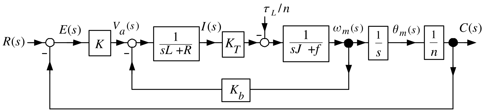
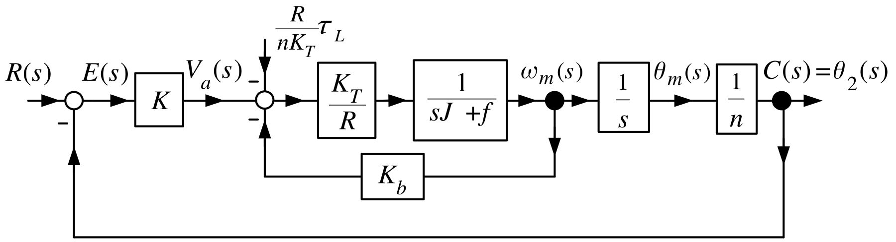
Set \(\frac{\tfrac{K_{T}/R}{sJ+f}}{1+K_{b}\tfrac{K_{T}/R}{sJ+f}}=\dfrac {b^{\prime}}{s+a}\) where \(b^{\prime}\triangleq\dfrac{K_{T}}{RJ},\) \(a\triangleq\dfrac{Rf+K_{b}K_{T}}{RJ}.\)
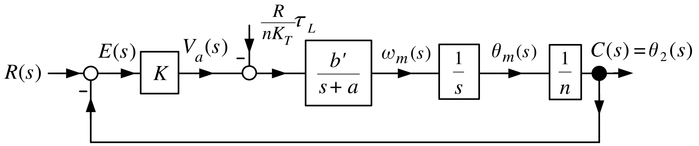
Set \(b\triangleq b^{\prime}/n,\) \(K_{L}\triangleq R/(nK_{T}).\)
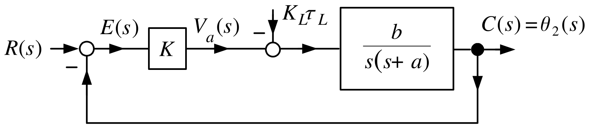
The amplifier, motor, gears, and load torque are modeled by a simple block diagram.
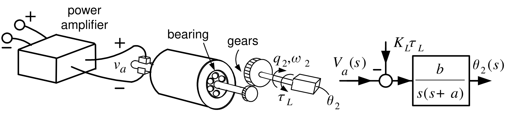
Block diagram for the proportional controlled servomechanism.
\(K_{L}=\dfrac{R}{nK_{T}}\) has the units \(\frac{\text{Ohms} }{\text{Nm/Amp}}=\frac{\text{Ohms-Amp}}{\text{Nm}}=\frac{\text{Volts} }{\text{Nm}}\)
\(K_{L}\tau_{L}\) has the units of Volts.
A voltage \(-K_{L}\tau_{L}\) applied to the motor has same effect on \(c(t)\) as \(\tau_{L}\).
Let \(G_{m}(s)=\dfrac{b}{s\left( s+a\right) },\) \(D(s)=K_{L}\tau_{L}(s)\):
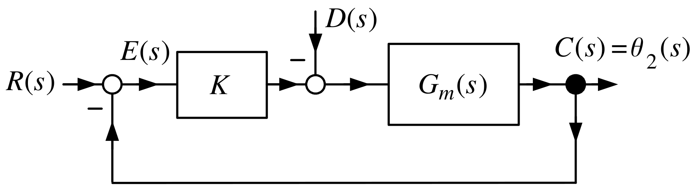
Standard Block Diagram: Replace \(K\) by \(G_{c}(s)=b_{c}(s)/a_{c}(s).\)
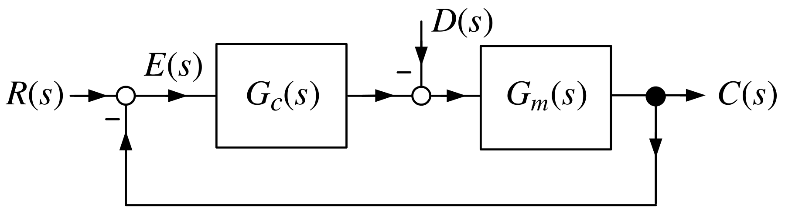
Compute \(C(s)\) in terms of \(R(s)\) and \(D(s)\) via block diagram reduction.
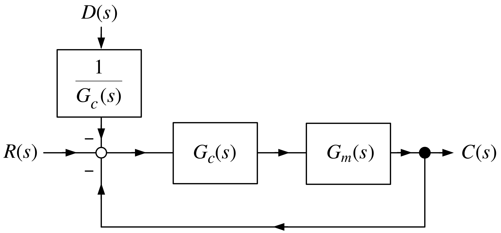
\[ C(s)=\frac{G_{c}(s)G_{m}(s)}{1+G_{c}(s)G_{m}(s)}\!\left( \!R(s)-\frac {1}{G_{c}(s)}D(s)\!\right) \!. \]
\[ C(s)=\frac{G_{c}(s)G_{m}(s)}{1+G_{c}(s)G_{m}(s)}\!\left( \!R(s)-\frac {1}{G_{c}(s)}D(s)\!\right) \]
or
\[ C(s)=\frac{G_{c}(s)G_{m}(s)}{1+G_{c}(s)G_{m}(s)}R(s)-\frac{G_{m}(s)} {1+G_{c}(s)G_{m}(s)}D(s). \]
Error \(E(s)\):
\[ E(s)=R(s)-C(s)=\frac{1}{1+G_{c}(s)G_{m}(s)}R(s)+\frac{G_{m}(s)}{1+G_{c} (s)G_{m}(s)}D(s)\nonumber \]
Tracking: If \(r(t)=R_{0}\), then we want \(c(t)\rightarrow R_{0}\) as \(t\rightarrow\infty.\)
Disturbance Rejection: We want \(c(t)\rightarrow R_{0}\) despite any load torque on the motor.
Tracking
Example Tracking a Step Input
\(R(s)=R_{0}/s,D(s)=0,\) and \(G_{m}(s)=\dfrac{1}{s(s+1)}.\)
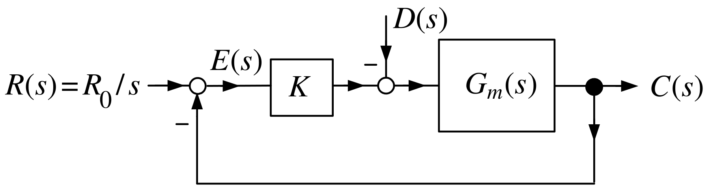
Objective: \(c(t)\rightarrow R_{0}\) or equivalently, \(e(t)\rightarrow0.\)
\[ C(s)=\frac{KG_{m}(s)}{1+KG_{m}(s)}R(s)\qquad{}\text{and}\qquad{}E(s)=\frac{1} {1+KG_{m}(s)}R(s). \]
\[ E(s)=\frac{1}{1+K\dfrac{1}{s(s+1)}}\frac{R_{0}}{s}=\frac{s(s+1)} {s(s+1)+K}\frac{R_{0}}{s}=\frac{s+1}{s^{2}+s+K}R_{0}. \]
The poles of \(KG_{m}(s)=K\dfrac{1}{s(s+1)}\) reappear in the numerator of \(E(s).\)
After clearing the fractions, the “\(s\)” in \(K\dfrac{1}{s(s+1)}\) cancelled the “\(s\)” in \(R(s)\).
Example Tracking a Step Input (continued)
From previous slide:
\[ E(s)=\frac{1}{1+K\dfrac{1}{s(s+1)}}\frac{R_{0}}{s}=\frac{s(s+1)} {s(s+1)+K}\frac{R_{0}}{s}=\frac{s+1}{s^{2}+s+K}R_{0}. \]
For \(K>0\), \(s^{2}+s+K\) is a stable polynomial so \(sE(s)\) is stable.
FVT: \(e(\infty)=\lim_{s\rightarrow0}sE(s)=\lim_{s\rightarrow0} s\dfrac{s(s+1)}{s(s+1)+K}\dfrac{R_{0}}{s}=0.\)
Thus \(c(t)\rightarrow R_{0}!\)
Where does stability come in? Let \(K=1\) so that
\[ s^{2}+s+1=\left[ s-\left( -\frac{1}{2}+\frac{j\sqrt{3}}{2}\right) \right] \left[ s-\left( -\frac{1}{2}-\frac{j\sqrt{3}}{2}\right) \right] =(s-p_{1})(s-p_{2}) \]
- PFE: \(E(s)=\dfrac{s(s+1)}{s(s+1)+K}\dfrac{R_{0}}{s}=\dfrac {s+1}{(s-p_{1})(s-p_{2})}R_{0}=\dfrac{\beta}{s-p_{1}}+\dfrac{\beta^{\ast} }{s-p_{2}}.\)
\[ \begin{aligned} e(t)=\beta e^{p_{1}t}+\beta^{\ast}e^{p_{2}t} & =|\beta|e^{j\angle\beta }e^{-(1/2)t+j(\sqrt{3}/2)t}+|\beta|e^{-j\angle\beta}e^{-(1/2)t-j(\sqrt{3} /2)t}\\ & =2|\beta|e^{-(1/2)t}\cos\!\left( \!(\sqrt{3}/2)t+\angle\beta\right) \rightarrow0\text{ as }t\rightarrow\infty. \end{aligned} \]
Tracking a Ramp Input
Let \(r(t)=\omega_{0}t\) \(\Longrightarrow\) \(R(s)=\omega_{0}/s^{2}\) and \(D(s)=0\).
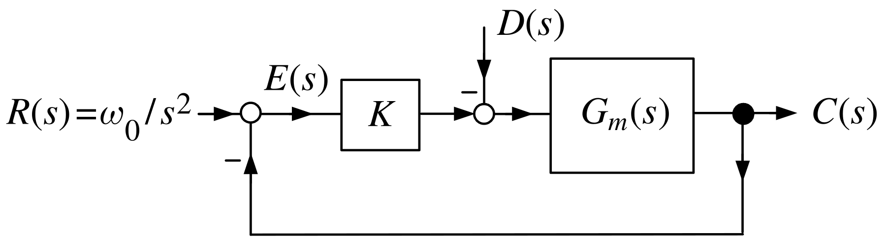
\[ E(s)=\frac{1}{1+K\dfrac{1}{s(s+1)}}\frac{\omega_{0}}{s^{2}}=\frac {s(s+1)}{s(s+1)+K}\frac{\omega_{0}}{s^{2}}=\frac{s+1}{s^{2}+s+K}\frac {\omega_{0}}{s}. \]
The pole of \(KG_{m}(s)\) at \(s=0\) cancelled one of the poles \(R(s)\).
For \(K>0\) it follows that \(s^{2}+s+K\) is stable and thus \(sE(s)\) is stable.
FVT: \(e(\infty)=\lim_{s\rightarrow0}sE(s)=\lim_{s\rightarrow0} \dfrac{s+1}{s(s+1)+K}\omega_{0}=\dfrac{\omega_{0}}{K}.\)
Asymptotic tracking is not achieved as \(e(t)\nrightarrow0\) as \(t\rightarrow\infty\).
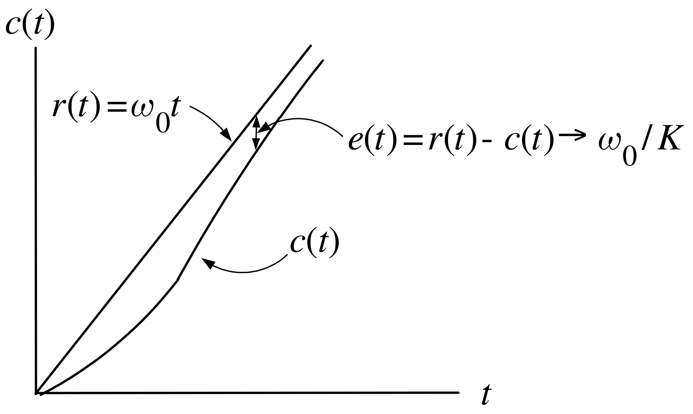
Tracking a Ramp Input (continued)
Where does stability come in? Let \(K=1\) so that
\[ \begin{aligned} E(s)=\frac{s(s+1)}{s(s+1)+K}\frac{\omega_{0}}{s^{2}} & =\frac{s+1} {s(s-p_{1})(s-p_{2})}\omega_{0},\quad{}p_{i}=-\frac{1}{2}\pm j\frac {\sqrt{3}}{2}\\ & =\frac{A}{s}+\frac{\beta}{s-p_{1}}+\frac{\beta^{\ast}}{s-p_{2}}\\ & =\frac{\omega_{0}}{s}+\frac{\beta}{s-p_{1}}+\frac{\beta^{\ast}}{s-p_{2} },\quad{}\omega_{0}=\lim_{s\rightarrow0}sE(s). \end{aligned} \]
Then as \(t\rightarrow\infty\)
\[ e(t)=\omega_{0}u_{s}(t)+\beta e^{p_{1}t}+\beta^{\ast}e^{p_{2}t}\rightarrow \omega_{0}. \]
A proportional controller will not track \(r(t)=\omega_{0}t\) with zero steady-state error.
Try a different controller!
Example Integral Controller
New controller: \(G_{c}(s)=K/s\).
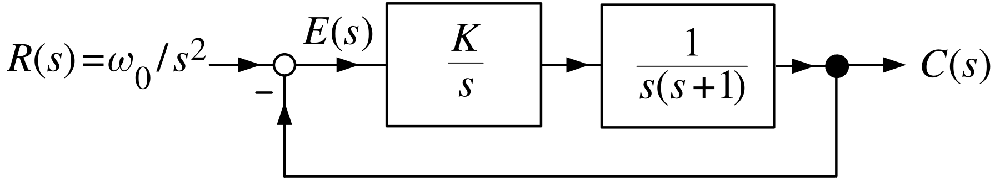
\[ E(s)=\frac{1}{1+\dfrac{K}{s}\dfrac{1}{s(s+1)}}\frac{\omega_{0}}{s^{2}} =\frac{s^{2}(s+1)}{s^{2}(s+1)+K}\frac{\omega_{0}}{s^{2}}=\frac{s+1} {s^{3}+s^{2}+K}\omega_{0} \]
The denominator of \(\dfrac{K}{s}\dfrac{1}{s(s+1)}\) reappears in the numerator of \(E(s)\).
The factor \(s^{2}\) in the numerator of \(E(s)\) cancels the \(s^{2}\) in denominator of \(R(s)\).
If
\(s^{3}+s^{2}+K\) was stable, by the FVT
\[ e(\infty)=\lim_{s\rightarrow0}sE(s)=\lim_{s\rightarrow0}s\frac{s+1} {s^{3}+s^{2}+K}\omega_{0}=0. \]
\(s^{3}+s^{2}+K\) is
not
stable for any value of \(K\)!
This controller will not work!
Example Integral Controller (continued)
- E.g., let \(K=1\) for which \(s^{3}+s^{2}+1\) has roots \(-1.47,0.23\pm j0.79\).
\[ \begin{aligned} E(s) & =\left. \frac{s+1}{s^{3}+s^{2}+K}\omega_{0}\right\vert _{K=1}\\ & =\frac{s+1}{(s+1.47)[s-(0.23+j0.79)][s-(0.23-j0.79)]}\omega_{0}\\ & =\frac{A}{s+1.47}+\frac{\beta}{s-(0.23+j0.79)}+\frac{\beta^{\ast} }{s-(0.23-j0.79)}.\\ & \\ e(t) & =Ae^{-1.47t}+\beta e^{0.23t}e^{j0.79t}+\beta^{\ast}e^{0.23t} e^{-j0.79t}\\ & =Ae^{-1.47t}+2\left\vert \beta\right\vert e^{0.23t}\cos(0.79t+\angle\beta). \end{aligned} \]
\(e(t)\nrightarrow0\) due to the complex-conjugate pair of unstable poles at \(0.23\pm j0.79\).
\(\lim\limits_{s\rightarrow0}sE(s)=0\) says nothing about the final value unless \(sE(s)\) is stable!
Example Proportional Plus Integral Controller
New controller: \(G_{c}(s)=K\dfrac{s+\alpha}{s}=K+\dfrac{\alpha K}{s}\) and \(R(s)=\dfrac{\omega_{0}}{s^{2}}\)
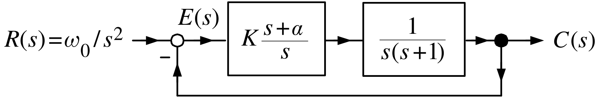
\[ E(s)=\frac{1}{1+K\dfrac{s+\alpha}{s}\dfrac{1}{s(s+1)}}R(s)=\frac{s^{2} (s+1)}{s^{2}(s+1)+K(s+\alpha)}\frac{\omega_{0}}{s^{2}}=\frac{s+1}{s^{3} +s^{2}+Ks+\alpha K}\omega_{0}. \]
The denominator of \(K\dfrac{s+\alpha}{s}\dfrac{1}{s(s+1)}\) reappears in the numerator of \(E(s)\).
The “\(s^{2}\)” in the numerator of \(E(s)\) cancels the “\(s^{2}\)” in the denominator of \(R(s)\).
If \(s^{3}+s^{2}+Ks+\alpha K\) is stable, the FVT gives
\[ e(\infty)=\lim_{s\rightarrow0}sE(s)=\lim_{s\rightarrow0}s\frac{s+1} {s^{3}+s^{2}+Ks+\alpha K}\omega_{0}=0. \]
Example Proportional Plus Integral Controller (continued)
Check stability of \(\dfrac{s+1}{s^{3}+s^{2}+Ks+\alpha K}\omega_{0}\):
\[ \begin{array}{ccc} s^{3} & 1 & K\\ s^{2} & 1 & \alpha K\\ s & \dfrac{K-\alpha K}{1} & 0\\ s^{0} & \alpha K & \end{array} \]
Stability requires
\[ \alpha K>0\qquad{}\text{and}\qquad{}K-\alpha K=K(1-\alpha)>0 \]
or
\[ K>0\text{ and }0<\alpha<1. \]
E.g., let \(K=1\) and \(\alpha=1/2\):
\[ s^{3}+s^{2}+s+1/2=(s+0.65)(s-[-0.176+j0.861])(s-[-0.176-j0.861]). \]
\[ E(s)=\frac{s+1}{(s-r)(s-p_{1})(s-p_{2})}\omega_{0}=\frac{A}{s-r}+\frac{\beta }{s-p_{1}}+\frac{\beta^{\ast}}{s-p_{2}}. \]
\[ \begin{aligned} e(t) & =Ae^{-0.65t}+\beta e^{-0.176t}e^{j0.861t}+\beta^{\ast}e^{-0.176t} e^{-j0.861t}\\ & =Ae^{-0.65t}+2|\beta|e^{-0.176t}\cos(0.861t+\angle\beta)\rightarrow0\text{ as }t\rightarrow\infty. \end{aligned} \]
Example Constant Load Torque with a Proportional Controller
Let \(G_{m}(s)=\dfrac{1}{s(s+1)}\) and \(\tau_{L}(t)=\tau_{L0}u_{s}(t)\) so \(D(s)=K_{L}\tau_{L}(s)=K_{L}\tau_{L0}/s\).
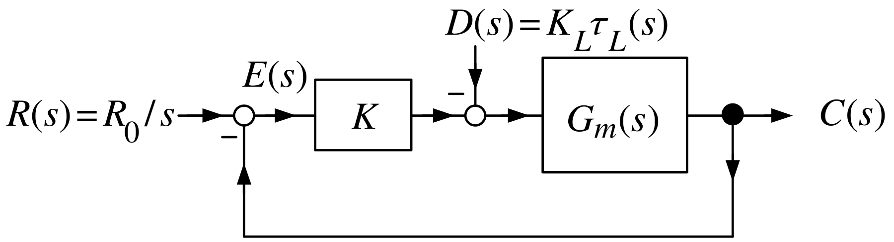
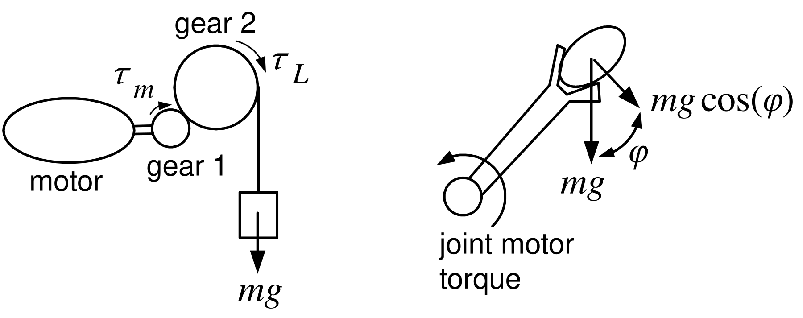
\[ E(s)=\underset{E_{R}(s)}{\underbrace{\frac{1}{1+KG_{m}(s)}R(s)}} +\underset{E_{D}(s)}{\underbrace{\frac{G_{m}(s)}{1+KG_{m}(s)}D(s)}} \]
For \(K>0\) and \(R(s)=R_{0}/s\) we saw \(\mathcal{L}^{-1}\{E_{R}(s)\}=e_{R}(t)\rightarrow0.\)
Does \(e_{D}(t)=\mathcal{L}^{-1}\{E_{D}(s)\}\rightarrow0\) as \(t\rightarrow\infty?\)
Example Constant Load Torque with a Proportional Controller (continued)
\[ E_{D}(s)=\frac{G_{m}(s)}{1+KG_{m}(s)}D(s)=\frac{\dfrac{1}{s(s+1)}} {1+K\dfrac{1}{s(s+1)}}K_{L}\tau_{L}(s)=\frac{K_{L}}{s^{2}+s+K}\frac{\tau_{L0} }{s}. \]
As \(s^{2}+s+K\) is stable for \(K>0\) it follows that \(sE_{D}(s)\) is stable so
\[ e_{D}(\infty)=\lim_{s\rightarrow0}sE_{D}(s)=\lim_{s\rightarrow0}s\frac{K_{L} }{s^{2}+s+K}\frac{\tau_{L0}}{s}=\frac{K_{L}\tau_{L0}}{K}. \]
The error
\[ r(t)-c(t)=e(t)=e_{R}(t)+e_{D}(t)\rightarrow e(\infty)=e_{R}(\infty )+e_{D}(\infty)=0+K_{L}\tau_{L0}/K. \]
Rearranging, we have
\[ c(\infty)=r(\infty)-e(\infty)=R_{0}-K_{L}\tau_{L0}/K. \]
The final output position depends on the value of the load torque \(\tau_{L0}\).
It is usually important to precisely position the motor regardless of the load.
Try a different controller!
Example Constant Load Torque with a PI Controller
Let \(G_{c}(s)=K_{p}+K_{I}/s=K\dfrac{s+\alpha}{s}\) where \(K_{p}=K,K_{I}=\alpha K.\)
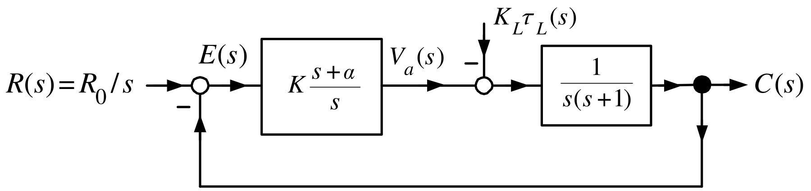
\[ \begin{aligned} \!\!\!\!\!\!E_{D}(s)=\frac{G_{m}(s)}{1+G_{c}(s)G_{m}(s)}D(s)=\frac{\dfrac {1}{s(s+1)}}{1+K\dfrac{s+\alpha}{s}\dfrac{1}{s(s+1)}}\frac{K_{L}\tau_{L0}} {s}\! & =\frac{s}{s^{2}(s+1)+K(s+\alpha)}\frac{K_{L}\tau_{L0}}{s}\\ \! & =\frac{1}{s^{3}+s^{2}+Ks+\alpha K}K_{L}\tau_{L0}. \end{aligned} \]
Only the denominator of \(G_{c}(s),\) i.e., ” \(s\)“ reappears in the numerator.
This “\(s\)” cancels the \(1/s\) in \(\tau_{L}(s)\).
\(s^{3}+s^{2}+Ks+\alpha K\) is stable for \(K>0\) and \(0<\alpha<1\), and so \(sE_{D}(s)\) is also stable.
\(\qquad\Longrightarrow\) \(e_{D}(\infty)=\lim_{s\rightarrow0}sE_{D} (s)=\lim_{s\rightarrow0}s\dfrac{{}}{s^{3}+s^{2}+Ks+\alpha K}K_{L}\tau _{L0}=0.\)
The load torque \(\tau_{L0}\) has no effect on the final position.
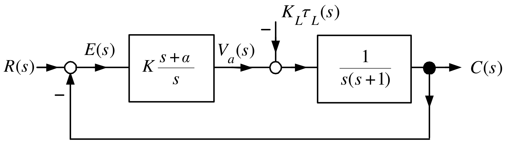
\(R(s)=R_{0}/s,\tau_{L}(s)=\tau_{L0}/s,\) and \(K,\alpha\) chosen so \(e(\infty)=\lim_{s\rightarrow0}sE(s)=0.\)
\[ \begin{aligned} V_{a}(s) & =K\dfrac{s+\alpha}{s}E(s)=KE(s)+\dfrac{\alpha K}{s}E(s)=\mathcal{L}\left\{ Ke(t)+\alpha K\int_{0}^{t}e(\tau)d\tau\right\} .\\ E(s) & =\underset{E_{R}(s)}{\underbrace{\frac{s^{2}(s+1)}{s^{3} +s^{2}+Ks+\alpha K}\frac{R_{0}}{s}}}+\underset{E_{D}(s)}{\underbrace{\frac {s}{s^{3}+s^{2}+Ks+\alpha K}\frac{K_{L}\tau_{L0}}{s}}}. \end{aligned} \]
\(E(s)\) is stable for \(K>0\) and \(0<\alpha<1\). Also, \(E(0)=\dfrac{K_{L}\tau _{L0}}{\alpha K}.\)
\[ \Longrightarrow v_{a}(\infty)=\lim_{t\rightarrow\infty}v_{a}(t)=\lim _{s\rightarrow0}sV_{a}(s)=\lim_{s\rightarrow0}\left( sKE(s)+\alpha KE(s)\right) =\alpha KE(0)=K_{L}\tau_{L0} \]
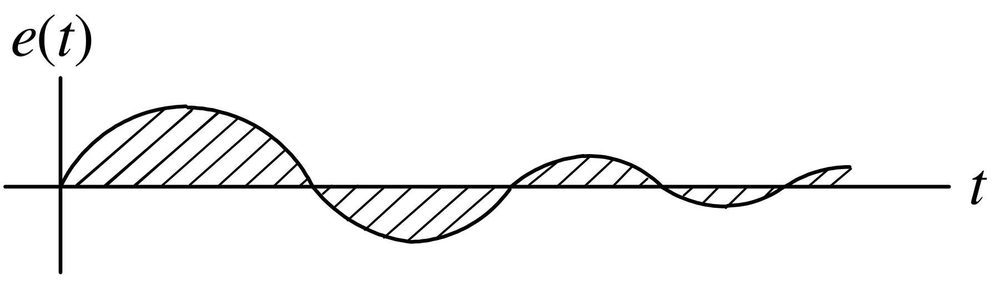
Shaded area is \(\int_{0}^{\infty}e(t)dt\) and \(v_{a}(\infty)=\alpha K\int _{0}^{\infty}e(t)dt=K_{L}\tau_{L0}.\)
\(R(s)=R_{0}/s+\omega_{0}/s^{2}=\mathcal{L}\{R_{0}+\omega_{0}t\}\) and \(\tau_{L}(s)=\tau_{L0}/s.\)
\[ \begin{aligned} C(s) & =\frac{G_{c}(s)G_{m}(s)}{1+G_{c}(s)G_{m}(s)}R(s)-\frac{G_{m} (s)}{1+G_{c}(s)G_{m}(s)}K_{L}\tau_{L}(s)\\ E(s) & =\frac{1}{1+G_{c}(s)G_{m}(s)}R(s)+\frac{G_{m}(s)}{1+G_{c}(s)G_{m} (s)}K_{L}\tau_{L}(s). \end{aligned} \]
\[ E(s)=\frac{s^{2}(s+1)}{s^{3}+s^{2}+Ks+\alpha K}\left( \frac{R_{0}}{s} +\frac{\omega_{0}}{s^{2}}\right) +\frac{s}{s^{3}+s^{2}+Ks+\alpha K} \frac{K_{L}\tau_{L0}}{s}. \]
\(K,\alpha\) chosen so \(s^{3}+s^{2}+Ks+\alpha K=(s-r)(s-p_{1})(s-p_{2})\) is stable.
\[ E(s)=\frac{(s+1)(R_{0}s+\omega_{0})}{(s-r)(s-p_{1})(s-p_{2})}+\frac {1}{(s-r)(s-p_{1})(s-p_{2})}K_{L}\tau_{L0} \]
\[ e(t)=Ae^{rt}+Be^{p_{1}t}+B^{\ast}e^{p_{2}t}+(Ce^{rt}+De^{p_{1}t}+D^{\ast }e^{p_{2}t})K_{L}\tau_{L0}\rightarrow0\text{ as }t\rightarrow\infty. \]
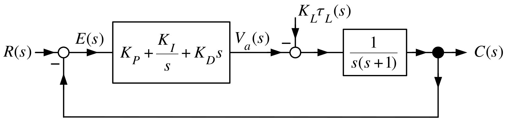
Proportional plus integral plus derivative (PID) controller:
\[ G_{c}(s)=K_{P}+\frac{K_{I}}{s}+K_{D}s=\frac{K_{D}s^{2}+K_{P}s+K_{I}}{s}. \]
Time domain:
\[ v_{a}(t)=K_{P}e(t)+K_{I}\int_{0}^{t}e(\tau)d\tau+K_{D}\frac{de}{dt}. \]
The derivative control term \(K_{D}s\) usually helps to make the system more stable.
- I.e., allows one to put the closed-loop poles further in the left half-plane.
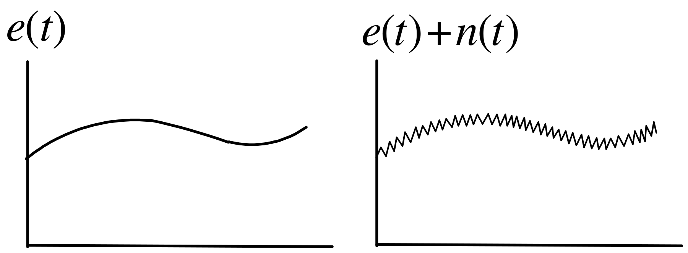
Differentiation of a signal with noise amplifies the noise!!
Most signals contain high-frequency low-amplitude noise.
Example Full-Wave Rectification
A power supply takes a \(60\) Hz AC signal and (full wave) rectifies it into a DC voltage.
This results in a small amplitude 120 Hz signal (i.e., noise) on the DC output.
The error signal \(e(t)\) is actually \(e(t)+n(t)\) where \(n(t)=0.01\sin (2\pi(120t)).\)
\(\dot{e}(t)+\dot{n}(t)=\dot{e}(t)+7.54\cos(754t)\).
The noise is small, but its derivative is large!
To mitigate differentiation amplifying high frequency noise, replace \(K_{D}s\) with
\[ \frac{K_{D}s}{\tau s+1}\approx\left\{ \begin{array}{cc} K_{D}s, & |s|<<1/\tau\\ K_{D}/\tau, & |s|>>1/\tau \end{array} \right. \qquad{}\text{where }\tau>0\text{ is small.} \]
At low frequencies \(K_{D}s/(\tau s+1)\) is a differentiator.
At high frequencies \(K_{D}s/(\tau s+1)\) is a proportional gain.
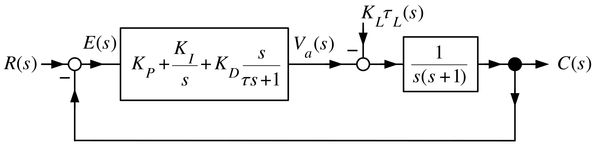
\(r(t)\) is often a step input, i.e., \(u_{s}(t)\) which is not differentiable at \(t=0.\)
To avoid differentiating \(r(t)\) we use the feedback control architecture shown below.
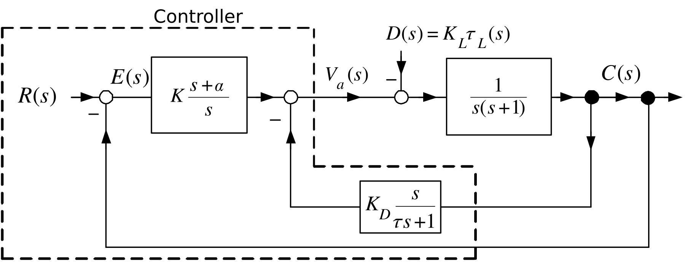
We do a simple block diagram manipulation on
to obtain
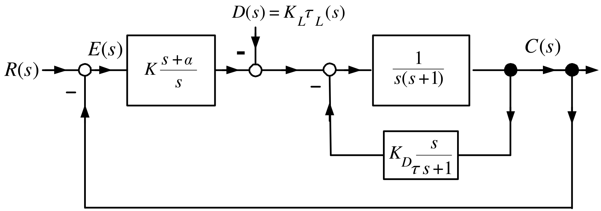
We then do some block diagram reduction so that
becomes (with \(\tau=0\))
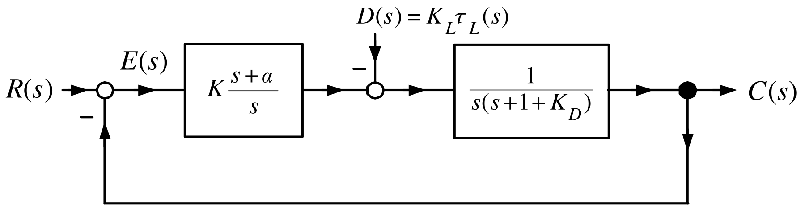
In order to set the values of \(K,\alpha,\) and \(K_{D},\) we take \(\tau=0\) as it is small.
Of course, in the implementation \(K_{D}s/(\tau s+1)\) must be used.
Now
\[ E_{R}(s)=\frac{1}{1+K\dfrac{s+\alpha}{s}\dfrac{1}{s+1+K_{D}}\dfrac{1}{s} }R(s)=\frac{s^{2}(s+1+K_{D})}{s^{3}+(1+K_{D})s^{2}+Ks+\alpha K}R(s) \]
and
\[ E_{D}(s)=\frac{\dfrac{1}{s+1+K_{D}}\dfrac{1}{s}}{1+K\dfrac{s+\alpha}{s} \dfrac{1}{s+1+K_{D}}\dfrac{1}{s}}D(s)=\frac{s}{s^{3}+(1+K_{D})s^{2}+Ks+\alpha K}D(s). \]
- \(K_{D},K\) and \(\alpha\) are then used to arbitrarily set the coefficients of
\[ s^{3}+(1+K_{D})s^{2}+Ks+\alpha K. \]
A PID controller for a DC servomotor achieves:
(1) Tracking of step and ramp inputs
(2) Rejection of constant load torque disturbances
(3) Placement of the closed-loop poles in any desired location.
Where do we place the closed-loop poles?
As far as possible in the left half-plane so the transients die out quickly.
Consider the previous example: The error \(E_{R}(s)\) is given by
\[ E_{R}(s)=\frac{s^{2}\left( s+1+K_{D}\right) }{s^{3}+(1+K_{D})s^{2}+Ks+\alpha K}R(s). \]
Suppose it is desired to put the closed-loop poles at \(-10,-10+j10\) and \(-10-j10\).
Set
\[ \begin{aligned} s^{3}+(1+K_{D})s^{2}+Ks+\alpha K & =(s+10)(s-(-10+j10))(s-(-10-j10))\\ & =(s+10)(s^{2}+20s+200)\\ & =s^{3}+30s^{2}+400s+2000. \end{aligned} \]
Choose \(1+K_{D}=30\) or \(K_{D}=29,K=400\), and \(\alpha K=2000\) or \(\alpha=5\).
Let \(\theta(0)=0\) and \(\omega(0)=0\) and \(r(t)=R_{0}u_{s}(t).\)
At \(t=0^{+},\) \(c(0^{+})=\theta(0^{+})=0,\omega(0^{+})=0\) so
\[ e(0^{+})=r(0^{+})-c(0^{+})=R_{0}. \]
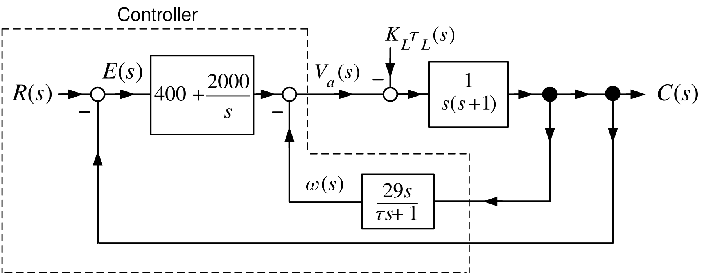
The voltage at $t=0^{+}$ is \[ v_{a}(0^{+})=400e(0^{+})+2000\int_{0}^{0^{+}}e(t)dt-29\omega(0^{+} )=400e(0^{+})=400R_{0}. \]
Right after \(r(t)=R_{0}u_{s}(t)\) is applied, the output of the amplifier is \(400R_{0}\).
In particular, if \(R_{0}=1\) radian, then the amplifier is required to put out \(400\) volts!
The further the poles are in the left half-plane, the larger the gains \(K,K_{D},\alpha\).
The larger the gains, the more likely the actuator (amplifier) saturates.
Theory of Tracking and Disturbance Rejection
Type Number of a Transfer Function
Let
\[ G(s)=\frac{b(s)}{s^{j}\bar{a}(s)},\quad{}\bar{a}(0)\neq0. \]
Then \(G(s)\) is said to be a type \(j\) system.
That is, it has \(j\) poles at the origin.
Example Transfer Functions and Their Type Numbers
\[ \begin{array}{lcl} G(s)=\dfrac{1}{s^{2}} & \text{Type 2} & \bar{a}(s)=1\\ & & \\ G(s)=\dfrac{1}{s(s+1)^{2}} & \text{Type 1} & \bar{a}(s)=(s+1)^{2}\\ & & \\ G(s)=\dfrac{1}{s+2} & \text{Type 0} & \bar{a}(s)=s+2\\ & & \\ G(s)=\dfrac{s+1}{s(s^{2}+2s+2)} & \text{Type 1} & \bar{a}(s)=s^{2}+2s+2 \end{array} \]
Type Number of Inputs
Let the reference input \(R(s)\) be given by
\[ R(s)=\frac{R_{0}}{s^{j}}. \]
Then \(R(s)\) is said to be a type \(j\) reference input.
Let the disturbance input \(D(s)\) be given by
\[ D(s)=\frac{D_{0}}{s^{j}}. \]
Then \(D(s)\) is said to be a type \(j\) disturbance input.
Remark
\(R(s)\) or \(D(s)\) have a type number only if they are of the form ([eq1]) or ([eq2]), respectively.
For example, the type number is not defined for
\[ R(s)=\dfrac{R_{0}}{s(s+1)}\qquad{}\text{or}\qquad{}D(s)=\dfrac{D_{0}}{s(s-2)}. \]
Tracking with Zero Steady-State Error
The reference input is type \(j\) for some positive integer \(j.\)
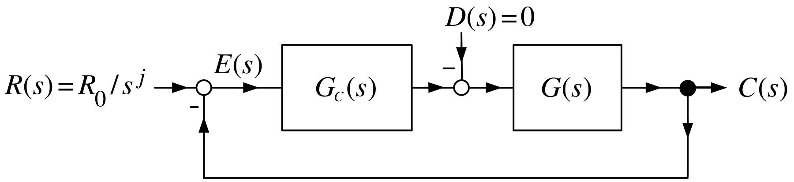
\(G(s)=\dfrac{b(s)}{a(s)}\) strictly proper, \(G_{c}(s)=\dfrac{b_{c}(s)} {a_{c}(s)}\) proper.
\[ E_{R}(s)=\frac{1}{1+G_{c}(s)G(s)}R(s)=\frac{1}{1+\dfrac{b_{c}(s)}{a_{c} (s)}\dfrac{b(s)}{a(s)}}R(s)=\frac{a_{c}(s)a(s)}{a_{c}(s)a(s)+b_{c} (s)b(s)}R(s). \]
If
(1) \(a_{c}(s)a(s)+b_{c}(s)b(s)\) has all of its roots in the open LHP.
(2) The type number of \(G_{c}(s)G(s)\) is \(j\) or greater.
Then
\[ \lim_{t\rightarrow\infty}e_{R}(t)=\lim_{t\rightarrow\infty}\left( r(t)-c(t)\right) =0. \]
- If \(R(s)=\dfrac{R_{0}}{s^{j}}\) then \(G_{c}(s)G(s)\) must contain at least a factor of \(\dfrac{1}{s^{j}}.\)
Given: The closed-loop system is stable and \(G_{c}(s)G(s)\) is at least type \(j.\)
\[ \begin{aligned} \!\!\!E_{R}(s)=\frac{1}{1+G_{c}(s)G(s)}R(s)=\frac{1}{1+\dfrac{b_{c}(s)} {a_{c}(s)}\dfrac{b(s)}{a(s)}}\frac{R_{0}}{s^{j}} & =\frac{a_{c}(s)a(s)} {a_{c}(s)a(s)+b_{c}(s)b(s)}\frac{R_{0}}{s^{j}}\\ & =\frac{s^{j}\bar{a}(s)}{a_{c}(s)a(s)+b_{c}(s)b(s)}\frac{R_{0}}{s^{j}}\\ & =\frac{\bar{a}(s)}{a_{c}(s)a(s)+b_{c}(s)b(s)}R_{0}\\ & =\frac{\bar{a}(s)}{(s-p_{1})\cdots(s-p_{n})}R_{0}\\ & =\frac{A_{1}}{s-p_{1}}+\frac{A_{2}}{s-p_{2}}+\cdots+\frac{A_{n}}{s-p_{n}}. \end{aligned} \]
\(e_{R}(t)=A_{1}e^{p_{1}t}+\cdots+A_{n}e^{p_{n}t}\rightarrow0\) as \(\operatorname{Re}(p_{i})<0\) for \(i=1,\ldots,n\).
Disturbance Rejection with Zero Steady-State Error
The disturbance is type \(j\) for some positive integer \(j.\)
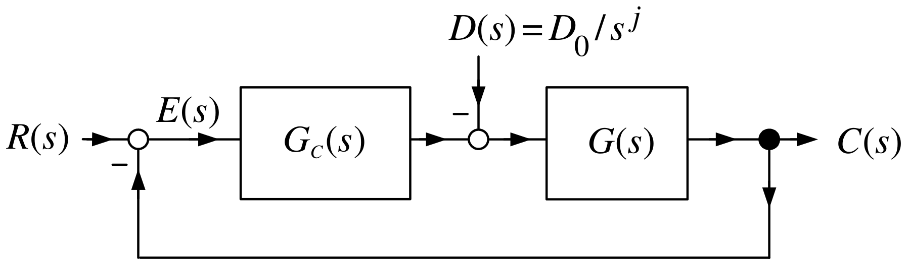
\(G(s)=\dfrac{b(s)}{a(s)}\) strictly proper and \(G_{c}(s)=\dfrac{b_{c}(s)} {a_{c}(s)}\) proper.
\[ E_{D}(s)=\frac{G(s)}{1+G_{c}(s)G(s)}D(s)=\frac{\dfrac{b(s)}{a(s)}} {1+\dfrac{b_{c}(s)}{a_{c}(s)}\dfrac{b(s)}{a(s)}}D(s)=\frac{a_{c}(s)b(s)} {a_{c}(s)a(s)+b_{c}(s)b(s)}D(s) \]
If
(1) \(a_{c}(s)a(s)+b_{c}(s)b(s)\) has all of its roots in the open LHP.
(2) The type number of \(G_{c}(s)\) is \(j\) or greater.
Then
\[ e_{D}(t)\triangleq\mathcal{L}^{-1}\!\{E_{D}(s)\}\rightarrow0 \]
- \(G_{c}(s)\) by itself must be type \(j.\)
Given: The closed-loop system is stable and \(G_{c}(s)\) is at least type \(j.\)
\[ \begin{aligned} E_{D}(s)=\frac{a_{c}(s)b(s)}{a_{c}(s)a(s)+b_{c}(s)b(s)}\frac{D_{0}}{s^{j}} & =\frac{s^{j}\bar{a}_{c}(s)b(s)}{a_{c}(s)a(s)+b_{c}(s)b(s)}\frac{D_{0}}{s^{j} }\\ & \\ & =\frac{\bar{a}_{c}(s)b(s)}{a_{c}(s)a(s)+b_{c}(s)b(s)}D_{0}\\ & \\ & =\frac{\bar{a}_{c}(s)b(s)}{(s-p_{1})\cdots(s-p_{n})}D_{0}\\ & \\ & =\frac{A_{1}}{s-p_{1}}+\frac{A_{2}}{s-p_{2}}+\cdots+\frac{A_{n}}{s-p_{n}}. \end{aligned} \]
\(\hspace{0.25in}e_{D}(t)=A_{1}e^{p_{1}t}+\cdots+A_{n}e^{p_{n}t}\rightarrow0\) as \(\operatorname{Re}(p_{i})<0\) for \(i=1,...,n.\)
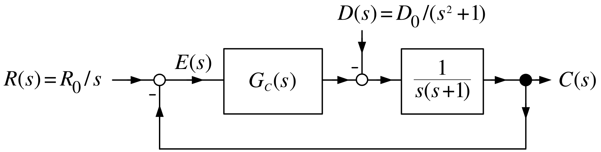
\(D(s)=\dfrac{D_{0}}{s^{2}+1}\) so \(d(t)=D_{0}\sin(t)\).
Let \(G_{c}(s)=K\dfrac{s+\alpha}{s^{2}+1}.\)
\(G_{c}(s)\) was chosen so its poles contained the poles of \(D(s).\)
\[ \begin{aligned} E_{D}(s)=\frac{G(s)}{1+G_{c}(s)G(s)}D(s) & =\frac{\dfrac{1}{s(s+1)} }{1+K\dfrac{s+\alpha}{s^{2}+1}\dfrac{1}{s(s+1)}}\frac{D_{0}}{s^{2}+1}\\ & =\frac{s^{2}+1}{s^{4}+s^{3}+s^{2}+(K+1)s+\alpha K}\frac{D_{0}}{s^{2}+1}. \end{aligned} \]
Rejecting a Sinusoidal Disturbance (continued)
\[ E_{D}(s)=\frac{s^{2}+1}{s^{4}+s^{3}+s^{2}+(K+1)s+\alpha K}\frac{D_{0}} {s^{2}+1}=\frac{1}{s^{4}+s^{3}+s^{2}+(K+1)s+\alpha K}D_{0}. \]
The factor of \(s^{2}+1\) in \(G_{c}(s)\) cancels the factor \(s^{2}+1\) in \(D(s).\)
For \(e_{D}(t)\rightarrow0\) we must find \(K,\alpha\) so \(s^{4}+s^{3} +s^{2}+(K+1)s+\alpha K\) is stable.
\[ \begin{array}{clcc} s^{4} & 1 & 1 & \alpha K\\ & & & \\ s^{3} & 1 & K+1 & 0\\ & & & \\ s^{2} & \dfrac{1-(K+1)}{1}=-K & \alpha K & 0\\ & & & \\ s & \dfrac{-K(K+1)-\alpha K}{-K}=\dfrac{K(K+1+\alpha)}{K} & 0 & \\ & & & \\ s^{0} & \alpha K & & \end{array} \]
Rejecting a Sinusoidal Disturbance (continued)
Stability requires \(-K>0,K+1+\alpha>0\) and \(\alpha K>0\) or
\[ K<0,\text{ }-(K+\alpha)<1,\text{ }\alpha<0. \]
E.g., let \(\alpha=-0.25,K=-0.6\) so \(s^{4}+s^{3}+s^{2}+(K+1)s+\alpha K\) becomes
\[ s^{4}+s^{3}+s^{2}+0.4s+0.15 \]
with roots
\[ -0.17\pm j0.63,\text{ }-0.33\pm j0.49. \]
The error response is
\[ e_{D}(t)=4.7e^{-0.17t}\sin(0.63t+0.37)-4.1e^{-0.33t}\sin(0.49t+0.4)\rightarrow 0 \]
- The transients die out slowly.
Rejecting a Sinusoidal Disturbance (continued)
We also have
\[ \begin{aligned} E_{R}(s)=\frac{1}{1+G_{c}(s)G(s)}R(s) & =\frac{1}{1+K\dfrac{s+\alpha} {s^{2}+1}\dfrac{1}{s(s+1)}}\frac{R_{0}}{s}\\ & =\frac{s(s+1)(s^{2}+1)}{s^{4}+s^{3}+s^{2}+(K+1)s+\alpha K}\frac{R_{0}}{s}\\ & =\frac{(s+1)(s^{2}+1)}{s^{4}+s^{3}+s^{2}+(K+1)s+\alpha K}R_{0}. \end{aligned} \]
\(E_{R}(s)\) has the same denominator as \(E_{D}(s)\).
\(\Longrightarrow\) \(E_{R}(s)\) is stable for \(\alpha=-0.25,K=-0.6\)
\(\Longrightarrow\) \(e_{R}(t)\rightarrow0\) as well (but slowly).
Disturbance Rejection
\(\quad G_{c}(s)\) must contain the unstable poles of \(D(s)\)
\(\quad\)and
\(\quad\)the closed-loop system must be stable.
Tracking
\(\quad G(s)G_{c}(s)\) must contain the unstable poles of \(R(s)\)
\(\quad\)and
\(\quad\)the closed-loop system must be stable.
Disturbance Rejection
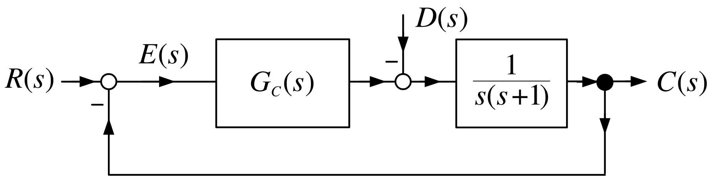
Let \(G_{c}(s)=K\dfrac{s+\alpha}{s^{2}+1},\) \(R(s)=\dfrac{R_{0}}{s},\) but \(D(s)=\dfrac{D_{0}}{s}.\)
\[ \begin{aligned} E_{D}(s)=\frac{G(s)}{1+G_{c}(s)G(s)}D(s) & =\frac{\dfrac{1}{s(s+1)} }{1+K\dfrac{s+\alpha}{s^{2}+1}\dfrac{1}{s(s+1)}}\frac{D_{0}}{s}\\ & =\frac{s^{2}+1}{s^{4}+s^{3}+s^{2}+(K+1)s+\alpha K}\frac{D_{0}}{s}. \end{aligned} \]
\(G_{c}(s)\) does not contain a pole at \(s=0\) so the pole of \(D(s)\) is not cancelled!
\(s^{4}+s^{3}+s^{2}+(K+1)s+\alpha K\) is stable for \(\alpha=-0.25,K=-0.6\).
So \(sE_{D}(s)\) is stable and by the FVT:
\[ e_{D}(\infty)=\lim_{s\rightarrow0}sE_{D}(s)=\lim_{s\rightarrow0}\frac{s^{2} +1}{s^{4}+s^{3}+s^{2}+(K+1)s+\alpha K}D_{0}=\frac{D_{0}}{\alpha K}. \]
Rejecting a Sinusoidal Disturbance with Pole Placement
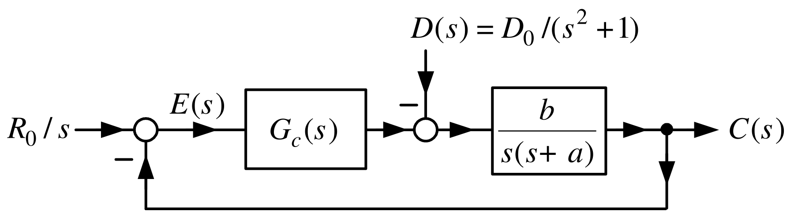
\(G_{c}(s)=\dfrac{b_{c}(s)}{a_{c}(s)}=\underset{\bar{G}_{c} (s)}{\underbrace{\dfrac{b_{3}s^{3}+b_{2}s^{2}+b_{1}s+b_{0}}{s+a_{0}}}} \dfrac{1}{s^{2}+1}.\)
\(G_{c}(s)\) is proper, but not strictly proper.
\(G_{c}(s)\) must have the factor \(\dfrac{1}{s^{2}+1}\) as required by the IMP.
\(\bar{G}_{c}(s)\) is now used to place the closed-loop poles in any desired location.
\[ \begin{aligned} \!\!\!\!\!\!\!\!E_{D}(s) & =\dfrac{G(s)}{1+G_{c}(s)G(s)}D(s)=\frac{\dfrac {b}{s(s+a)}}{1+\dfrac{b_{3}s^{3}+b_{2}s^{2}+b_{1}s+b_{0}}{s+a_{0}}\dfrac {1}{s^{2}+1}\dfrac{b}{s(s+a)}}\frac{D_{0}}{s^{2}+1}\\ \!\!\! & =\!\!\!\frac{(s+a_{0})(s^{2}+1)b}{(s+a_{0})s(s+a)(s^{2} +1)+bb_{3}s^{3}+bb_{2}s^{2}+bb_{1}s+bb_{0}}\frac{D_{0}}{s^{2}+1}. \end{aligned} \]
Rejecting a Sinusoidal Disturbance with Pole Placement (cont.)
\[ \begin{aligned} \!\!\!\!\!E_{D}(s)\! & =\!\frac{(s+a_{0})(s^{2}+1)b}{(s+a_{0})s(s+a)(s^{2} +1)+bb_{3}s^{3}+bb_{2}s^{2}+bb_{1}s+bb_{0}}\frac{D_{0}}{s^{2}+1}\\ \! & =\!\frac{(s+a_{0})b}{s^{5}+(a+a_{0})s^{4}+(aa_{0}+bb_{3}+1)s^{3} +(a+a_{0}+bb_{2})s^{2}+(aa_{0}+bb_{1})s+bb_{0}}D_{0}. \end{aligned} \]
Desired closed-loop characteristic polynomial: \(s^{5}+f_{4}s^{4} +f_{3}s^{3}+f_{2}s^{2}+f_{1}s+f_{0}.\)
Equate coefficients:
\[ \begin{aligned} bb_{0} & =f_{0}\\ a_{0}+a & =f_{4}\\ aa_{0}+bb_{1} & =f_{1}\\ a+a_{0}+bb_{2} & =f_{2}\\ aa_{0}+bb_{3}+1 & =f_{3}. \end{aligned} \]
Rejecting a Sinusoidal Disturbance with Pole Placement (cont.)
\[ \begin{aligned} bb_{0} & =f_{0}\\ a_{0}+a & =f_{4}\\ aa_{0}+bb_{1} & =f_{1}\\ a+a_{0}+bb_{2} & =f_{2}\\ aa_{0}+bb_{3}+1 & =f_{3}. \end{aligned} \]
\(\Longrightarrow\)
\[ \begin{aligned} b_{0} & =\frac{f_{0}}{b}\\ & \\ a_{0} & =f_{4}-a\\ & \\ b_{1} & =\frac{f_{1}-aa_{0}}{b}=\frac{f_{1}-af_{4}+a^{2}}{b}\\ & \\ b_{2} & =\frac{f_{2}-a-a_{0}}{b}=\frac{f_{2}-f_{4}}{b}\\ & \\ b_{3} & =\frac{f_{3}-aa_{0}-1}{b}=\frac{f_{3}-af_{4}+a^{2}+1}{b}. \end{aligned} \]
Rejecting a Sinusoidal Disturbance with Pole Placement (cont.)
Desired closed-loop poles: \(-r_{1},-r_{2},...,-r_{5}\) where \(r_{1} >0,r_{2}>0,...,r_{5}>0.\)
\[ \begin{aligned} & \!\!\!\!\!\!\!\!\!(s+r_{1})(s+r_{2})(s+r_{3})(s+r_{4})(s+r_{5})= & s^{5}+\underset{f_{4}}{\underbrace{(r_{1}+r_{2}+r_{3}+r_{4}+r_{5})}}s^{4}\\ \!\!\! & +\text{ }\underset{f_{3}}{\underbrace{(r_{1}r_{2}+r_{1}r_{3} +r_{1}r_{4}+r_{1}r_{5}+r_{2}r_{3}+r_{2}r_{4}+r_{2}r_{5}+r_{3}r_{4}+r_{3} r_{5}+r_{4}r_{5})}}s^{3}\\ \!\!\! & +\text{ }\underset{f_{2}}{\underbrace{(r_{1}r_{2}r_{3}+r_{1} r_{2}r_{4}+r_{1}r_{2}r_{5}+r_{1}r_{3}r_{4}+r_{1}r_{3}r_{5}+r_{1}r_{4} r_{5}+r_{2}r_{3}r_{4}+r_{2}r_{3}r_{5}+r_{2}r_{4}r_{5}+r_{3}r_{4}r_{5})}} s^{2}\\ & \!+\text{ }\underset{f_{1}}{\underbrace{(r_{1}r_{2}r_{3}r_{4}+r_{1} r_{2}r_{3}r_{5}+r_{1}r_{2}r_{4}r_{5}+r_{1}r_{3}r_{4}r_{5}+r_{2}r_{3}r_{4} r_{5})}}s\\ \!\!\! & +\text{ }\underset{f_{0}}{\underbrace{r_{1}r_{2}r_{3}r_{4}r_{5}}} \end{aligned} \]
Rejecting a Sinusoidal Disturbance with Pole Placement (cont.)
Finally
\[ \begin{aligned} \!\!\!E_{D}(s) & =\frac{(s+a_{0})b}{s^{5}+(a+a_{0})s^{4}+(aa_{0} +bb_{3}+1)s^{3}+(a+a_{0}+bb_{2})s^{2}+(aa_{0}+bb_{1})s+bb_{0}}D_{0}\\ & \\ & =\frac{(s+a_{0})b}{(s+r_{1})(s+r_{2})(s+r_{3})(s+r_{4})(s+r_{5})}D_{0}. \end{aligned} \]
\(\Longrightarrow\)
\[ e_{D}(t)=A_{1}e^{-r_{1}t}+A_{2}e^{-r_{2}t}+A_{3}e^{-r_{3}t}+A_{4}e^{-r_{4} t}+A_{5}e^{-r_{5}t}\rightarrow0. \]
We also have (why?)
\[ e_{R}(t)=B_{1}e^{-r_{1}t}+B_{2}e^{-r_{2}t}+B_{3}e^{-r_{3}t}+B_{4}e^{-r_{4} t}+B_{5}e^{-r_{5}t}\rightarrow0. \]
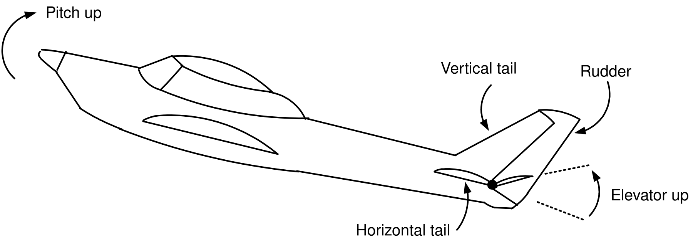
\[ \frac{\theta(s)}{\delta(s)}=G(s)=\dfrac{1.51s+0.1774}{s^{3}+0.739s^{2} +0.921s}. \]
Actuator Constraint: Elevator deflection is restricted to \(-25^{\circ}\leq\delta\leq25^{\circ}.\)
Design specifications:
(1) Overshoot less than 10%.
(2) Rise time less than 2 seconds.
(3) Settling time less than 10 seconds.
(4) Steady-state error less than 2%.
\[ \frac{\theta(s)}{\delta(s)}=G(s)=\dfrac{1.51s+0.1774}{s^{3}+0.739s^{2} +0.921s}. \]
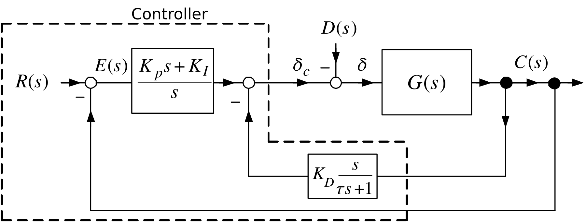
\(R(s)=R_{0}/s\) with \(R_{0}=0.2\) radians (\(11.\,5\) degrees)
Air turbulence on the aircraft body and wings causes its pitch to change.
Disturbance modeled as an equivalent (unknown) deflection of the elevator angle.
Use the PI-D controller (\(\tau=0\) to simplify the presentation)
\[ \delta_{c}(t)=K_{p}e(t)+K_{I}\int_{0}^{t}e(t^{\prime})dt^{\prime}+K_{D} \frac{dc(t)}{dt}. \]
With
\[ \delta_{c}(t)=K_{p}e(t)+K_{I}\int_{0}^{t}e(t^{\prime})dt^{\prime}+K_{D} \frac{dc(t)}{dt} \]
at \(t=0\) this becomes
\[ \begin{aligned} \delta_{c}(0+) & =K_{p}e(0+)+K_{I}\int_{0}^{0^{+}}e(t^{\prime})dt^{\prime }+K_{D}\dot{c}(0+)\\ & \\ & =K_{p}(R_{0}-c(0+))\\ & \\ & =K_{p}R_{0.} \end{aligned} \]
\(R_{0}=0.2\) radians (\(11.5^{\circ})\) and \(|\delta|\leq0.436\) radians (\(25^{\circ})\) requires
\[ K_{p}\leq0.436/0.2=2.18\text{.} \]
\[ G_{2}(s)=\frac{\dfrac{1.51s+0.1774}{s^{3}+0.739s^{2}+0.921s}}{1+K_{D} s\dfrac{1.51s+0.1774}{s^{3}+0.739s^{2}+0.921s}}=\dfrac{1.51s+0.1774} {s^{3}+(1.51K_{D}+0.739)s^{2}+(0.1774K_{D}+0.921)s} \]
\[ \begin{aligned} G_{CL}(s) & =\frac{\left( \dfrac{K_{p}s+K_{I}}{s}\right) \dfrac {1.51s+0.1774}{s^{3}+(1.51K_{D}+0.739)s^{2}+(0.1774K_{D}+0.921)s}}{1+\left( \dfrac{K_{p}s+K_{I}}{s}\right) \dfrac{1.51s+0.1774}{s^{3}+(1.51K_{D} +0.739)s^{2}+(0.1774K_{D}+0.921)s}}\\ & \\ & =\frac{(K_{p}s+K_{I})(1.51s+0.1774)}{s[s^{3}+(1.51K_{D}+0.739)s^{2} +(0.1774K_{D}+0.921)s]+(K_{p}s+K_{I})(1.51s+0.1774)} \end{aligned} \]
\[ \begin{aligned} \!\!\!\!\!\!\!G_{CL}(s) & =\frac{(K_{p}s+K_{I})(1.51s+0.1774)}{s[s^{3} +(1.51K_{D}+0.739)s^{2}+(0.1774K_{D}+0.921)s]+(K_{p}s+K_{I})(1.51s+0.1774)}\\ & \\ & =\frac{(K_{p}s+K_{I})(1.51s+0.1774)}{a_{CL}(s)} \end{aligned} \]
where
\[ \begin{aligned} \!\!\!\!\!\!\!\!\!\!\!\!\!\!a_{CL}(s) & =s^{4}+s^{3}(1.51K_{D}+0.739)\,+s^{2} (1.51K_{p}+0.1774K_{D}+0.921)+\\ & s(0.1774K_{p}+1.51K_{I})+0.1774K_{I}. \end{aligned} \]
- Zeros of \(G_{CL}(s)\) are \(-K_{I}/K_{P}\) and \(-0.1774/1.51=-0.118\)
\[ \begin{aligned} \!\!\!\!\!\!\!\!\!\!\!\!\!\!a_{CL}(s) & =s^{4}+s^{3}(1.51K_{D}+0.739)\,+s^{2} (1.51K_{p}+0.1774K_{D}+0.921)+\\ & s(0.1774K_{p}+1.51K_{I})+0.1774K_{I}. \end{aligned} \]
How do we set the gains \(K_{p},K_{I},K_{D}?\)
One Possible Procedure
- (1)
-
With \(K_{I}=K_{D}=0\) adjust the value of \(K_{p}\) ” until the response oscillates”.
(Assumes the closed-loop system is stable for small values of \(K_{p}>0)\).
- (2)
-
Next adjust the value of \(K_{I}\) so that the steady-state error goes to zero.
(Typically the response becomes more oscillatory as \(K_{I}\) is increased.)
- (3)
-
Finally, adjust the value of \(K_{D}\) to damp out the oscillatory response.
No reason to expect that this procedure will result in a satisfactory response.
Recall \(\delta_{c}(0)=K_{p}R_{0}\) so \(K_{p}\leq\delta_{\max}/R_{0} =0.436/0.2=2.18\) to avoid actuator saturation.
Take \(K_{p}=2.18\) (largest possible value avoiding saturation).
With \(K_{p}\) fixed at \(2.18\), \(K_{I}\) is varied from \(0.2\) to \(2.\)
\(K_{I}=1\) is chosen.
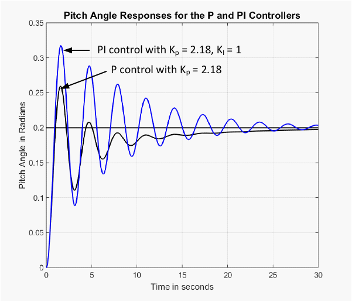
\(K_{D}\) was varied from 1 to 2 (with \(\tau=0.05\)). I chose \(K_{D}=1.5\).
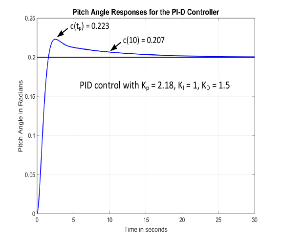
\(M_{p}=(0.223-0.2)/0.2=0.115\) or \(11.5\%.\) (NOT the specified \(10\%.\))
\(c(10)=0.207\) or \((0.207-0.2)/0.2=0.035\,\)which is \(3.5\%\) of the final value.
(NOT the specified \(2\%.\))
The rise time is about \(1.6\) seconds which is within the 2 second specification.
The corresponding elevator command \(\delta_{c}\) does not saturate.
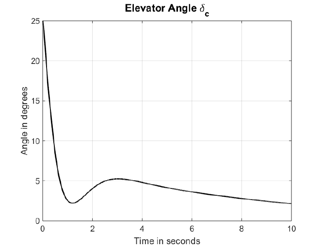
\(K_{p}\leq\delta_{\max}/R_{0}=2.18\) makes the specifications difficult to achieve.
The specs can be met by increasing the gains, but allowing saturation.
However, if the pilot pitched up and then needed to immediately pitch down instead,
the plane would not react to his new command until the actuator left saturation.
Use a ramp reference input (Specifications are easily met!).
\[ r(t)=\left\{ \begin{array}{rl} (0.2/1.5)t, & \text{for }0\leq t\leq1.5\\ 0.2, & \text{for }t>0.2 \end{array} \right. \]
Set \(K_{P}=12,K_{I}=0.25,K_{D}=2.\)
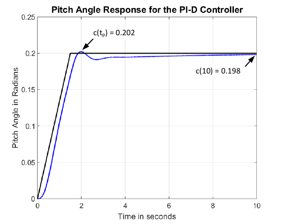
Recall the closed-loop transfer function
\[ G_{CL}(s)=\frac{(K_{p}s+K_{I})(1.51s+0.1774)}{s^{4}+s^{3}(1.51K_{D} +0.739)+s^{2}(1.51K_{p}+0.1774K_{D}+0.921)+s(0.1774K_{p}+1.51K_{I} )+0.1774K_{I}}. \]
Note that \(G_{CL}(0)=1\) and so
\[ \lim_{t\rightarrow\infty}c(t)=\lim_{s\rightarrow0}sC(s)=\lim_{s\rightarrow 0}sG_{CL}(s)\frac{0.2}{s}=0.2. \]
With \(K_{P}=12,K_{I}=0.25,K_{D}=2\)
\[ \begin{aligned} G_{CL}(s) & =\frac{(12s+0.25)(1.51s+0.1774)}{s^{4}+3.759s^{3}+19.396s^{2} +2.5063s+0.04435}\\ & \\ & =\frac{18.12(s+0.0208)(s+0.1175)}{(s^{2}+3.627s+18.92)(s+0.111)(s+0.0211)}. \end{aligned} \]
\[ \begin{aligned} G_{CL}(s) & =\frac{(12s+0.25)(1.51s+0.1774)}{s^{4}+3.759s^{3}+19.396s^{2} +2.5063s+0.04435}\\ & \\ & =\frac{18.12(s+0.0208)(s+0.1175)}{(s^{2}+3.627s+18.92)(s+0.111)(s+0.0211)}. \end{aligned} \]
Observation
The zeros at \(-0.0208,-0.1175\) (essentially) cancel the poles at \(-0.0211\) and \(-0.111.\)
\[ \begin{aligned} c(t)=\mathcal{L}^{-1}\left\{ G_{CL}(s)\frac{0.2}{s}\right\} & =0.2u_{s} (t)+0.0029e^{-0.0211t}-0.0115e^{-0.111t}\\ & -0.191e^{-1.81t}\!\!\left( \cos(3.95t)+0.460\sin (3.95t)\right) \end{aligned} \]
The coefficients of \(e^{-0.0211t}\) and \(e^{-0.111t}\) are 20 times smaller the coefficient \(e^{-1.81t}.\)
Though \(0.0029e^{-0.0211t},-0.0115e^{-0.111t}\) die out slowly, they have small values.
Maintaining \(G_{CL}(0)=1\) a pretty good approximation is
\[ G_{CL}(s)\approx\frac{18.92}{s^{2}+3.627s+18.92}. \]
\[ G_{CL}(s)=\frac{18.12(s+0.0208)(s+0.1175)}{(s^{2} +3.627s+18.92)(s+0.111)(s+0.0211)}\approx\frac{18.92}{(s^{2}+3.627s+18.92)}. \]
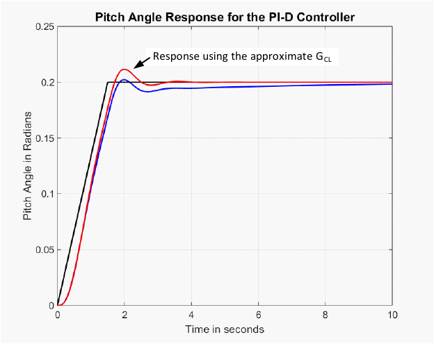
The PI-D gains \(K_{P},K_{I},K_{D}\) gains were set based on simulations using
\[ \frac{\theta(s)}{\delta(s)}=G(s)=\dfrac{1.51s+0.1774}{s^{3}+0.739s^{2} +0.921s}. \]
Suppose the Pitch Model is actually closer to
\[ G_{truth}(s)=\frac{\theta(s)}{\delta(s)}=\dfrac{s+0.12}{s^{3}+0.4s^{2}+s}. \]
Will the response still meet specifications?
\[ G(s)=\dfrac{1.51s+0.1774}{s^{3}+0.739s^{2}+0.921s}\qquad{}\text{and}\qquad{} G_{truth}(s)=\dfrac{s+0.12}{s^{3}+0.4s^{2}+s}. \]
The PI-D gains \(K_{P},K_{I},K_{D}\) gains were set based on simulations using \(G(s).\)
Response \(c(t)\) using \(G(s)\) and \(G_{truth}(s)\) are shown.
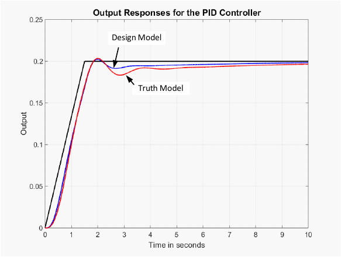
The two responses are close even though \(G(s)\) & \(G_{truth}(s)\) are quite different.
This is a fundamental advantage of using closed-loop feedback!
The corresponding elevator command angles are shown below.
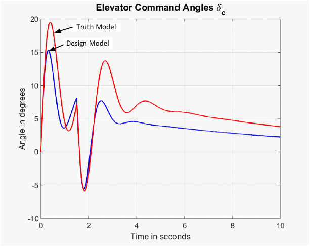

← Course Home · System Modeling and Control · Chapter 9